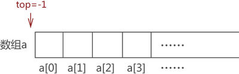
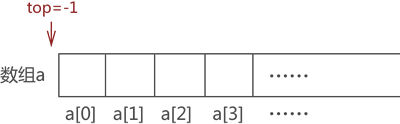

顺序栈及基本操作（包含入栈和出栈）
顺序栈，即用顺序表实现栈存储结构。通过前面的学习我们知道，使用栈存储结构操作数据元素必须遵守 "先进后出" 的原则，本节就 "如何使用顺序表模拟栈以及实现对栈中数据的基本操作（出栈和入栈）" 给大家做详细介绍。
如果你仔细观察顺序表（底层实现是数组）和栈结构就会发现，它们存储数据的方式高度相似，只不过栈对数据的存取过程有特殊的限制，而顺序表没有。
例如，我们先使用顺序表（a 数组）存储

图 1 顺序表存储 {1,2,3,4}
同样，使用栈存储结构存储

图 2 栈结构存储 {1,2,3,4}
通过图 1 和图 2 的对比不难看出，使用顺序表模拟栈结构很简单，只需要将数据从 a 数组下标为 0 的位置依次存储即可。
这里给出使用顺序表模拟栈存储结构常用的实现思路，即在顺序表中设定一个实时指向栈顶元素的变量（一般命名为 top），top 初始值为 -1，表示栈中没有存储任何数据元素，及栈是"空栈"。一旦有数据元素进栈，则 top 就做 +1 操作；反之，如果数据元素出栈，top 就做 -1 操作。

图 3 空栈示意图
首先向栈中添加元素 1，我们默认数组下标为 0 一端表示栈底，因此，元素 1 被存储在数组 a[1] 处，同时 top 值 +1，如图 4 所示：
图 4 模拟栈存储元素 1
采用以上的方式，依次存储元素 2、3 和 4，最终，top 值变为 3，如图 5 所示：

图 5 模拟栈存储{1,2,3,4}
因此，C 语言实现代码为：
比如，将图 5 中的元素 2 出栈，则需要先将元素 4 和元素 3 依次出栈。需要注意的是，当有数据出栈时，要将 top 做 -1 操作。因此，元素 4 和元素 3 出栈的过程分别如图 6a) 和 6b) 所示：

图 6 数据元素出栈
如果你仔细观察顺序表（底层实现是数组）和栈结构就会发现，它们存储数据的方式高度相似，只不过栈对数据的存取过程有特殊的限制，而顺序表没有。
例如，我们先使用顺序表（a 数组）存储
{1,2,3,4}，存储状态如图 1 所示：
图 1 顺序表存储 {1,2,3,4}
同样，使用栈存储结构存储
{1,2,3,4}，其存储状态如图 2 所示：
图 2 栈结构存储 {1,2,3,4}
通过图 1 和图 2 的对比不难看出，使用顺序表模拟栈结构很简单，只需要将数据从 a 数组下标为 0 的位置依次存储即可。
从数组下标为 0 的模拟栈存储数据是常用的方法，从其他数组下标处存储数据也完全可以，这里只是为了方便初学者理解。
了解了顺序表模拟栈存储数据后，接下来看如何模拟栈中元素出栈的操作。由于栈对存储元素出栈的次序有"先进后出"的要求，如果想将图 1 中存储的元素 1 从栈中取出，需先将元素 4、元素 3 和元素 2 依次从栈中取出。这里给出使用顺序表模拟栈存储结构常用的实现思路，即在顺序表中设定一个实时指向栈顶元素的变量（一般命名为 top），top 初始值为 -1，表示栈中没有存储任何数据元素，及栈是"空栈"。一旦有数据元素进栈，则 top 就做 +1 操作；反之，如果数据元素出栈，top 就做 -1 操作。
顺序栈元素"入栈"
比如，还是模拟栈存储{1,2,3,4} 的过程。最初，栈是"空栈"，即数组是空的，top 值为初始值 -1，如图 3 所示：

图 3 空栈示意图
首先向栈中添加元素 1，我们默认数组下标为 0 一端表示栈底，因此，元素 1 被存储在数组 a[1] 处，同时 top 值 +1，如图 4 所示：
图 4 模拟栈存储元素 1
采用以上的方式，依次存储元素 2、3 和 4，最终，top 值变为 3，如图 5 所示：
图 5 模拟栈存储{1,2,3,4}
因此，C 语言实现代码为：
//元素elem进栈，a为数组，top值为当前栈的栈顶位置
int push(int* a,int top,int elem){
a[++top]=elem;
return top;
}
代码中的 a[++top]=elem，等价于先执行 ++top，再执行 a[top]=elem。顺序栈元素"出栈"
其实，top 变量的设置对模拟数据的 "入栈" 操作没有实际的帮助，它是为实现数据的 "出栈" 操作做准备的。比如，将图 5 中的元素 2 出栈，则需要先将元素 4 和元素 3 依次出栈。需要注意的是，当有数据出栈时，要将 top 做 -1 操作。因此，元素 4 和元素 3 出栈的过程分别如图 6a) 和 6b) 所示：
图 6 数据元素出栈
注意，图 6 数组中元素的消失仅是为了方便初学者学习，其实，这里只需要对 top 值做 -1 操作即可，因为 top 值本身就表示栈的栈顶位置，因此 top-1 就等同于栈顶元素出栈。并且后期向栈中添加元素时，新元素会存储在类似元素 4 这样的旧元素位置上，将旧元素覆盖。
元素 4 和元素 3 全部出栈后，元素 2 才能出栈。因此，使用顺序表模拟数据出栈操作的 C 语言实现代码为：
//数据元素出栈
int pop(int * a,int top){
if (top==-1) {
printf("空栈");
return -1;
}
printf("弹栈元素：%d\n",a[top]);
top--;
return top;
}
代码中的 if 语句是为了防止用户做 "栈中已无数据却还要数据出栈" 的错误操作。代码中，关于对栈中元素出栈操作的实现，只需要 top 值 -1 即可。总结
通过学习顺序表模拟栈中数据入栈和出栈的操作，初学者完成了对顺序栈的学习，这里给出顺序栈及对数据基本操作的 C 语言完整代码：
#include <stdio.h>
//元素elem进栈
int push(int* a,int top,int elem){
a[++top]=elem;
return top;
}
//数据元素出栈
int pop(int * a,int top){
if (top==-1) {
printf("空栈");
return -1;
}
printf("弹栈元素：%d\n",a[top]);
top--;
return top;
}
int main() {
int a[100];
int top=-1;
top=push(a, top, 1);
top=push(a, top, 2);
top=push(a, top, 3);
top=push(a, top, 4);
top=pop(a, top);
top=pop(a, top);
top=pop(a, top);
top=pop(a, top);
top=pop(a, top);
return 0;
}
程序输出结果为：
弹栈元素：4
弹栈元素：3
弹栈元素：2
弹栈元素：1
空栈
关注公众号「站长严长生」，在手机上阅读所有教程，随时随地都能学习。内含一款搜索神器，免费下载全网书籍和视频。

微信扫码关注公众号